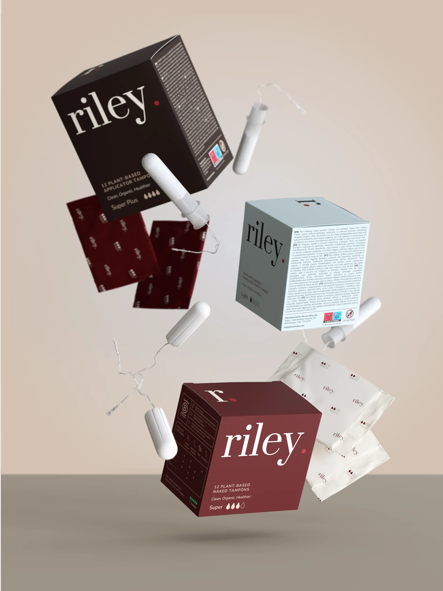
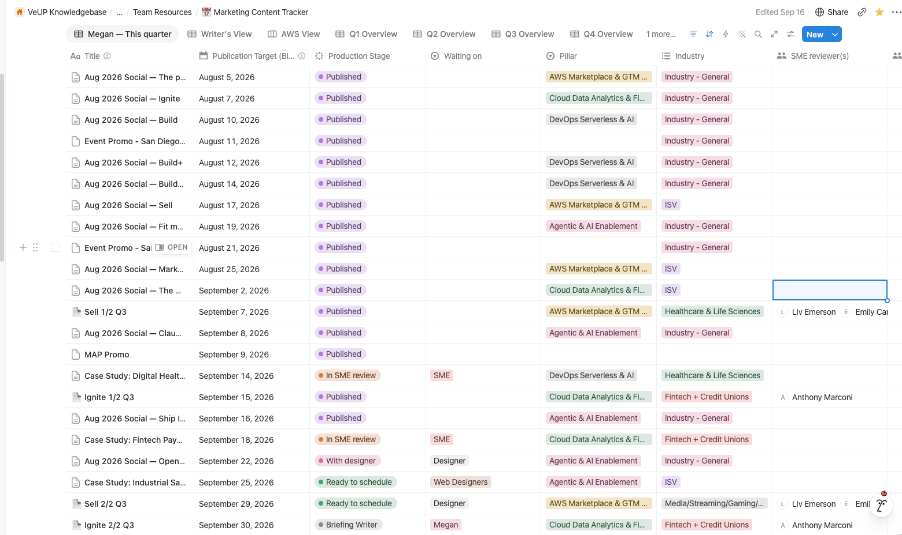
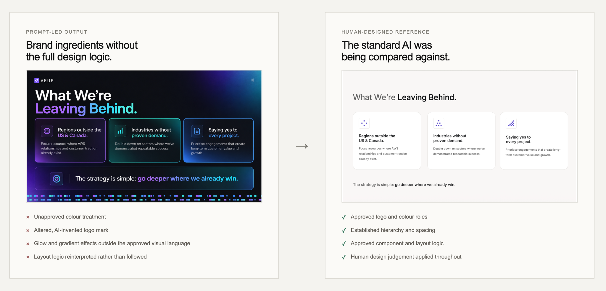
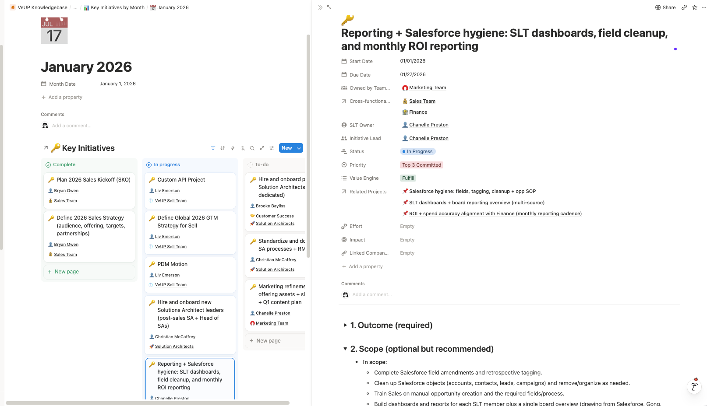
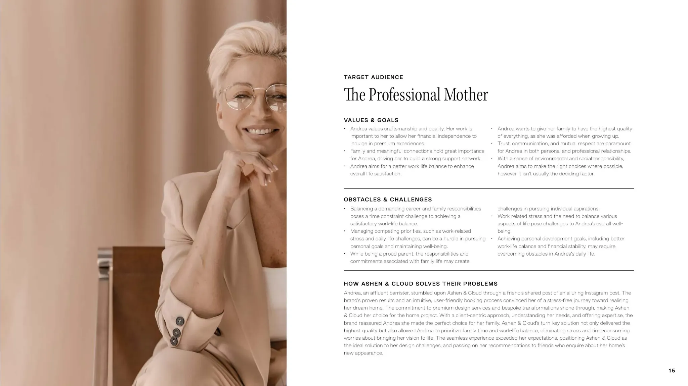
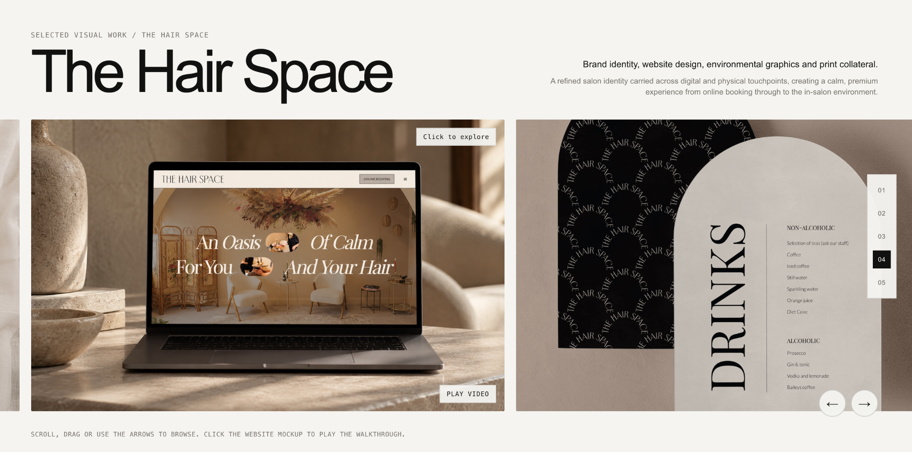

Brand and creative operations leadership
I’m Megan O’Connor. I connect brand strategy and creative direction with the systems that help teams deliver: clear briefs, shared standards and practical AI workflows, with human judgement throughout.
Explore selected workSelected work / 06 projects
See the thinking
in practice.
Different problems, same question: what needs to change for the work to get better?
-
Riley · Brand direction
Repositioned a period-care brand for conscious consumers and workplace buyers, then directed the identity, packaging and pre-print launch imagery.

-
VeUP · Creative operations
Rebuilt briefing, resourcing and handoffs. Hands-on effort for a standard three-page service overview fell from approximately 11–12 hours to 2–3.

-
VeUP · AI design system
Built and tested a Figma-based creative system with reusable AI Skills. During testing, weekly correction time fell from approximately 15 hours to three.

-
VeUP · Company operating system
A shared operating model and Notion workspace adopted across 10 teams and 30–33 employees. Estimated weekly planning and coordination overhead fell by 60–75%.

-
Ashen & Cloud · Customer insight and brand strategy
Research, positioning and a Webflow website for an interiors studio seeking fewer, better-fit projects. The founder reported better-fit enquiries following the rebrand.

-
Selected brand, web and campaign work
Work for Kinvara, David Ho, The Hair Space and VeUP, including website UX, navigation, information architecture, campaigns and motion.

About / Madrid, Spain
About me.
I’ve spent nine years working across brand, design and creative operations, including five running an independent studio for more than 35 clients.
At VeUP, I joined as the first in-house Creative Lead and progressed into Marketing Growth and Operations Manager, retaining creative ownership as my remit expanded into workflows, company systems and AI-assisted production.
My leadership has centred on distributed freelance specialists and partners: setting the brief, allocating work, giving feedback and maintaining quality. I’m based in Madrid, Spain.